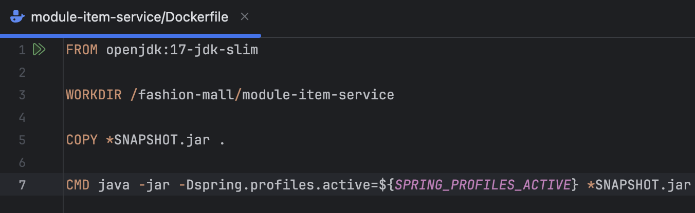
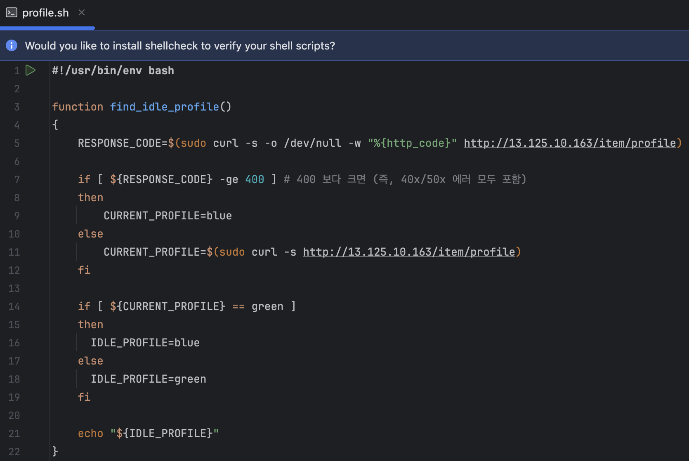
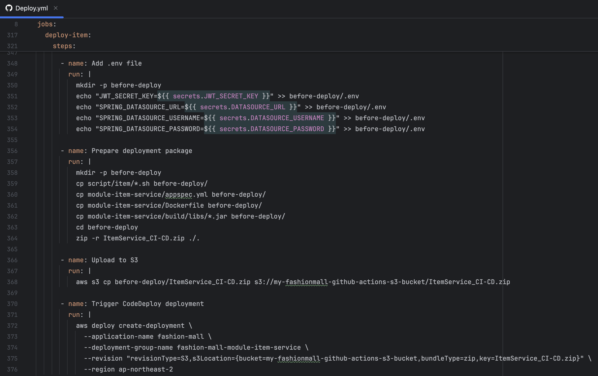
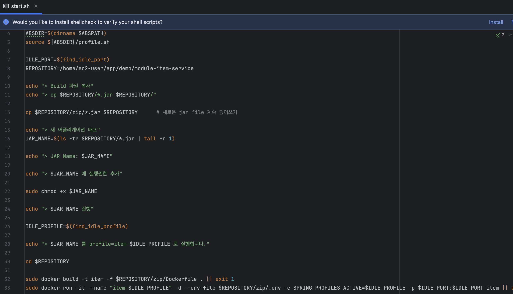
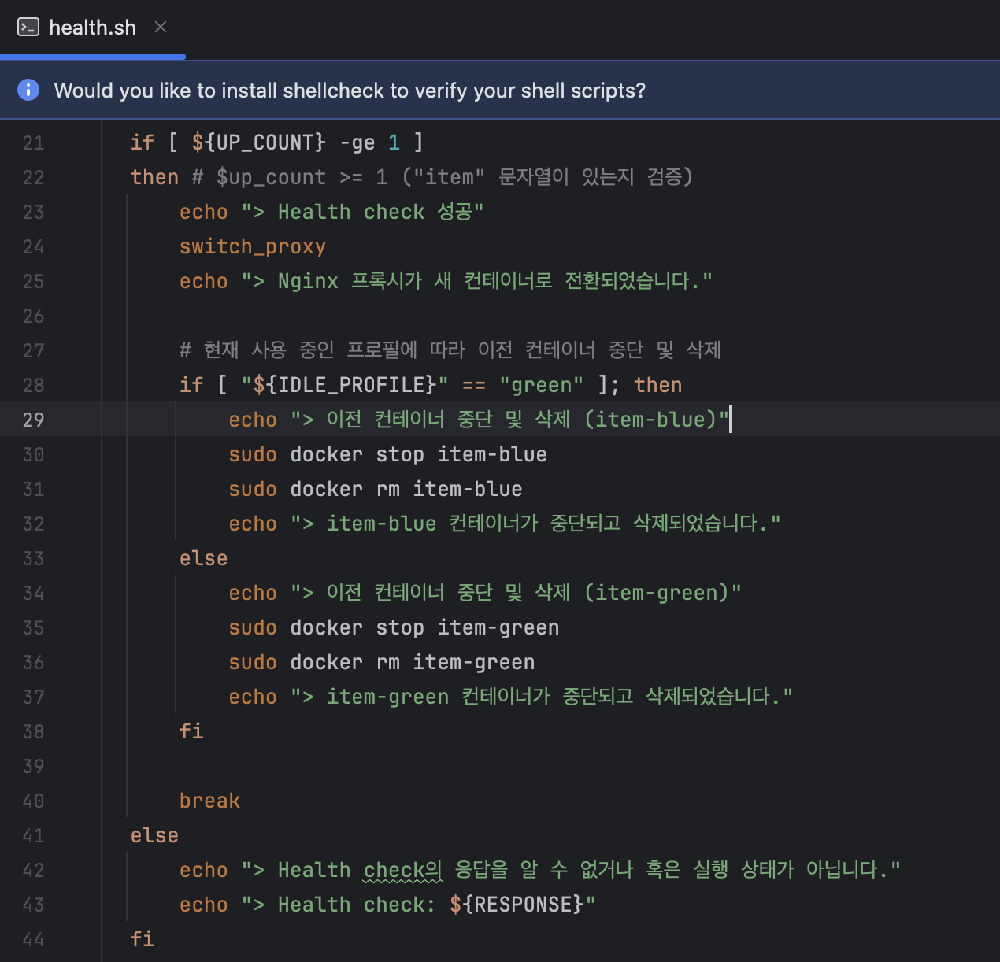

프로젝트 개요
- 프로젝트명: 패션몰 프로젝트
- 개발기간: 2024년 8월 ~ 2024년 11월
- 참여인원: 3명
- 담당업무: DB설계, 주문/결제 서비스 기능, 결제 API 연동, Eureka/Gateway 기능, 공통응답 및 예외 처리, 쿠폰(등록/관리/사용) 기능, 리뷰 기능, CI/CD 구축, 서버 구축
사용 기술

- 개발환경: MacOS
- 사용 도구: IntelliJ IDEA
- 사용 기술
- Java
- Spring Boot, Spring Data JPA, QueryDSL
- Spring Cloud (Eureka, Gateway)
- WebClient (비동기 API 통신)
- JWT (인증 및 보안)
- 서버 및 인프라
- AWS EC2
- AWS S3
- Nginx
- 데이터베이스
- MySQL
- CI/CD
- GitHub Actions
- AWS CodeDeploy
- 컨테이너화
- Docker
주요기능 및 요구사항
사용자 주요기능 및 요구사항
상품 주요기능 및 요구사항
쿠폰 주요기능 및 요구사항
주문/결제 주요기능 및 요구사항
찜 주요기능 및 요구사항
장바구니 주요기능 및 요구사항
리뷰 주요기능 및 요구사항
화면구현 설계
메인 화면 및 회원가입/로그인 화면
상품 목록 및 상세 화면
상품 주문 및 주문 내역 화면 설계
결제 수단 등록 및 목록 화면 설계
쿠폰 및 쿠폰 받기 목록 화면
DB 설계
프로젝트 소개
메인 페이지 화면
실제 패션몰 사이트의 메인 화면입니다. 우측 상단에 로그인 버튼을 통해 로그인 및 회원가입을 진행할 수 있게 구현해 놨으며,
장바구니를 통해서 원하는 상품을 담아 주문할 수 있도록 구현했습니다.
좌측 메뉴바와 화면 중단에 위치한 카테고리를 통해서 상품의 카테고리를 지정해 원하는 종류의 상품을 확인 할 수 있고,
메인 중앙에는 최근 등록된 상품을 볼 수 있도록 구현했습니다.
로그인 / 회원가입 화면
메인 화면에서 우측 상단에 로그인 버튼을 통해 로그인을 시도할 때 화면입니다. 이메일과 비밀번호를 통해 로그인 할 수 있게 구현했으며, 회원가입을 할 수 있도록 회원가입 버튼을 넣어 회원가입을 할 수 있게 화면 구현 해놨습니다.

상품 목록 페이지 화면
메인 중앙에 카테고리 페이지를 통해 들어갈 수 있는 상품 목록 화면입니다. 상품의 이미지와 상품명, 가격이 나오도록 구현했으며, 상품을 클릭하면 상품의 상세 페이지로 이동하게 됩니다.
상품 상세 페이지 화면
상품의 상세 페이지 화면입니다. 상품의 사이즈와 색상이 표시되며 드롭다운 메뉴바를 통해서 옵션과 색상에 맞는 상품을 선택할 수 있고, 수량을 선택해
상품을 장바구니에 추가할 수 있게 구현했습니다.
장바구니 담기 버튼 옆 하트버튼은 '찜' 기능으로 상품을 찜해 마이페이지에 있는 찜 목록에 추가할 수 있도록 했으며
하단에 리뷰 영역에는 상품에 대한 리뷰글과 리뷰를 작성할 수 있는 영역을 마련해 리뷰를 확인하고 상품에 대한 리뷰를 작성할 수 있도록 구현했습니다.
장바구니/주문 화면
장바구니 화면과 주문 화면입니다. 장바구니 화면에서는 자신의 장바구니에 추가한 상품을 확인할 수 있으며, 개수를 추가로 늘리거나 줄일 수 있고 장바구니에서 상품을 제거할 수
있도록
구현해놨습니다.
장바구니에서 상품을 선택 후 주문하기를 선택하면 주문 화면으로 넘어가 쿠폰, 결제수단, 배송지를 선택할 수 있게 됩니다. 쿠폰 선택 시 주문 상품의 가격에 맞춰
할인가가 표시되며 상품 자체의 할인 금액 또한 표시가 되고 최종 결제 금액이 표기 됩니다.
주문 내역/주문 상세 화면
마이페이지에 있는 주문 내역과 주문 상세 화면입니다. 주문 내역은 주문번호, 주문날짜, 주문 상태, 결제금액이 표기가 되며,
주문 상세 화면으로 넘어가 주문된 상품의 상세 정보와 결제된 금액에 대한 자세한 내역을 보여주도록 구현했습니다.
주문 상세 화면에서는 주문된 상품의 주문을 취소할 수 있으며 주문 취소시 결제된 금액은 결제취소가 되도록 구현했습니다.
주문 취소 후 주문 내역 화면

결제 수단 화면
결제 수단은 카드번호, 생년월일, 비밀번호 앞 2자리, 카드 유효기간을 입력하고 사용자가 카드를 구별해 사용할 수 있도록 카드 별명을 지정해 카드를 등록하도록 구현했습니다. 결제 수단은 포트원API를 사용해 빌링키로 등록되도록 하였고, 신용카드와 체크카드를 구별할 수 있도록 표기했습니다.
배송지 화면
배송지는 주소 찾기 버튼을 눌러 카카오 지도 API를 사용해 주소를 찾고 주소의 상세주소를 입력해 등록할 수 있도록 구현했습니다.
트러블 슈팅
Webclient 응답 이슈
구현하고자 한 것
- WebClient를 활용하여 API 호출을 수행하는 공통 모듈을 구현하고, API 호출에서 공통 응답 구조인 CommonResponse<T>를 사용하여 다양한 타입의 데이터를 처리하는 공통 모듈을 구현하려고 했습니다. 이를 통해 여러 API 호출 로직을 일관되게 처리하고 유지보수성을 높이고자 했습니다.
발생한 이슈
런타임에서 제네릭 타입 정보 소거 문제- WebClient를 통해 데이터를 가져올 때 Class<T>를 사용하여 응답 타입을 처리하려 했습니다.
CommonResponse<List<ItemInfoResponseDto>> response = webClient.get() .uri(uri) .retrieve() .bodyToMono(CommonResponse.class) .block(); - 하지만, 제네릭 구조(CommonResponse<List<ItemInfoResponseDto>>)의 구체적인 타입 정보를 런타임에 알 수 없어서 JSON 파싱 도중 타입 정보가 손실되는 문제가 발생했습니다.
- Class<T>를 사용한 경우, 컴파일러가 내부 제네릭 타입(List<ItemInfoResponseDto>)의 정확한 타입을 검증할 수 없었습니다.
- 타입 캐스팅 과정에서 런타임 에러가 발생할 가능성이 있었습니다.
- Class<T>로는 중첩된 제네릭 타입(List<ItemInfoResponseDto>) 정보를 런타임에서 유지할 수 없어, 정확한 데이터 매핑이 어려웠습니다.
해결 방법
Class<T> 대신 ParameterizedTypeReference를 사용하여 제네릭 타입 정보를 런타임까지 유지하고, 정확한 데이터 매핑을 수행했습니다.-
1. ParameterizedTypeReference를 사용한 정확한 타입 정보 유지
- CommonResponse<List<ItemInfoResponseDto>>의 구체적인 타입 정보를 유지할 수 있도록
ParameterizedTypeReference를 사용했습니다
ParameterizedTypeReference<CommonResponse<List<ItemInfoResponseDto>>> typeReference = new ParameterizedTypeReference<>() {};public <T> T get(String uri, ParameterizedTypeReference<T> elementTypeRef, Map<String, String> headers, ErrorResponseCode clientErrorCode, ErrorResponseCode serverErrorCode) { return webClient.get() .uri(uri, headers != null ? headers : Collections.emptyMap()) .headers(getHttpHeadersConsumer(headers)) .retrieve() .onStatus(HttpStatusCode::is4xxClientError, response -> handleClientError(response, clientErrorCode)) .onStatus(HttpStatusCode::is5xxServerError, response -> handleServerError(response, serverErrorCode)) .bodyToMono(elementTypeRef) .block();
2. WebClient에서 제네릭 타입 처리
- WebClient 호출 시 bodyToMono에 ParameterizedTypeReference를 전달하여 응답 데이터를 정확히 매핑
CommonResponse<List<ItemInfoResponseDto>> commonResponse = webClientUtil.get( url, new ParameterizedTypeReference<CommonResponse<List<ItemInfoResponseDto>>>() { }, headers(getAccessToken(request)), ErrorResponseCode.CLIENT_ERROR, ErrorResponseCode.SERVER_ERROR_FROM_SERVICE );
프로젝트 무중단 배포
구현하고자 한 것
- AWS EC2 서버에서 프로젝트가 GitHub Main 브랜치에 Merge되었을 때 자동 배포되는 CI/CD 파이프라인을 구현.
시도한 방법
기존 배포 방식- 기존 방식으로 서비스를 배포하면 배포 중 짧은 시간 동안 서비스가 중단되어 클라이언트 요청이 실패하거나 장애로 이어짐.
- Docker를 활용하여 Green-Blue 방식으로 배포.
- Nginx 설정 파일을 수정하여 Green과 Blue 컨테이너 간 트래픽을 전환.
발생한 이슈
Docker Compose의 서비스 중복 실행 문제- 동일한 이름의 서비스가 Docker Compose에서 중복 실행되지 않음.
- 새로운 컨테이너를 생성할 때 이전 컨테이너와 이미지를 정리하지 않으면 디스크 공간 부족 문제가 발생.
해결 방법
Dockerfile 기반 배포로 전환- Docker Compose를 사용하지 않고, Dockerfile 기반으로 이미지를 직접 빌드. 
- Green/Blue 컨테이너를 직접 관리하여 Docker Compose의 서비스 중복 실행 문제를 회피.
- 자동 배포 시 현재 컨테이너가 Green인지 Blue인지 확인하고, 새로 배포되는 컨테이너의 환경변수를 Green 또는 Blue로 설정하여 배포. 
- AWS CodeDeploy를 사용하여 배포 자동화를 구현. 
- 배포 과정에서 새로운 컨테이너와 이미지를 생성. 
- 배포 스크립트에서 헬스체크를 수행하여 새로운 컨테이너가 정상적으로 실행되는지 확인.
- 헬스체크 후, 이전 컨테이너와 이미지를 정리하여 디스크 공간 문제 해결. 
마무리 소감
이번 프로젝트는 첫 팀 프로젝트로 지금껏 배웠던 언어와 기술을 사용하고 또 새로운 기술들을 배울 수 있었던 기회였습니다.
개인 프로젝트 이후 첫 팀 프로젝트였던 만큼 여러 변수와 오류들을 겪게 됐는데 이를 팀원들과 서로가 의논해 해결할 수 있었고, 최종적으로 단점을 많이 보완해서 더 나은 프로젝트가 될 수
있었던 것 같습니다.
지금껏 모놀리식 서비스를 개발해 왔던 저에게 MSA 서비스는 새로운 도전이었습니다. 서비스별로 모듈을 만들어 기능을 개발하고,
서비스간의 API통신을 위해 Spring Cloud를 사용할 때에는 새로운 기술을 사용해 여러 오류를 경험하게 됐지만 점차 기술을 이해하고 완전히 제 것을 만들어지고 있다는 것을
느꼈습니다.
또한 포트원 결제 API를 사용하는 것과 AWS 서비스, CI/CD를 통한 무중단 자동 배포를 만들어 갈 때에 생각처럼 되지 않는 부분이 많아 어려움이 많았지만 기초 단계부터 차근차근
기술이 어떻게 적용되고 작동하는지를 알아가고 만든 기능이 제 기능을 할 때 큰 즐거움을 얻었습니다.
이번 팀 프로젝트에서 팀원들의 의견과 아이디어를 나누고 서로의 강점을 살리면서 기술적인 성장을 하고 커뮤니케이션 및 문제 해결 능력이 향상됐습니다.
프로젝트를 진행하며 역할 분담과 협업에 대한 중요성을 깨달았고 새로운 기술을 사용함에 따라 저의 경험치가 조금씩이라도 늘어감을 느끼게 됐습니다.
팀원들과 목표를 향해 같이 나가는 경험은 매우 값지고 개인 프로젝트의 자율성 외에도 협업을 통해 다양하고 넓은 시각과 접근 방식을 배우게되는 좋은 경험이었습니다.